Optimization Studies#
The parameter study introduced in the preceding lesson provides a complete overview of the design space, but the study is only feasible when the problem has few independent parameters, preferably one or two. In the previous lesson we considered a problem with two parameters and 10 steps in each direction of the design space leading to \(5^2 = 25\) analyses. If the problem had 10 parameters we would be facing \(5^{10}\) or 9.7 million analyses, which is an entirely different matter in terms of computation times. The truth is that such so-called full factorial parameter studies are computationally infeasible when the problem has more than very few independent parameters. So what to do?
The solution is to use a method that picks the combinations to compute carefully and only has to evaluate a few of them. One class of such methods is optimization. An optimization algorithm systematically searches through the design space for the combination of parameters that minimizes the value of a function of the parameters, the so-called objective function. Some algorithms also allow the definition of constraint functions, which are dependent parameters that must be maintained below a certain upper limit.
The AnyBody Modeling System provides a study to handle optimization problems. The mathematical definition of the problem it solves is as follows:
Minimize
\(g_0(x_1..x_n)\)
Subject to
\(g_i(x_1..x_n) \leq 0 \\ \text{and} \\L_j \leq x_j \leq U_j\)
where \(g_0\) is called the objective function, \(x_j\), \(j=1..n\) are the design variables, and \(g_i\), \(i=1..m\) are the constraints. The definition of an optimization problem in AnyBody is therefore a question of appointing independent parameters as design variables and dependent parameters as the objective function and constraints. Please notice that \(m\) could be zero in which case we have a problem that is only constrained by the simple bounds on the variables.
In an optimization terminology, the parameter study from the preceding lesson could be defined as:
Minimize
Metabolic energy consumption
Subject to
Saddle height within predefined limits Saddle horizontal position within predefined limits
In fact, this is precisely what we are going to do, but before we proceed, let us briefly look at the properties of a typical musculoskeletal objective function and how the optimization algorithm solves the problem.
 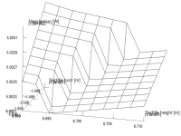
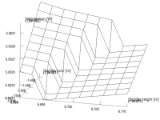
The two pictures above both show the result of a parameter study. The picture on the right is the section indicated by the magnifying glass on the left amplified by 50 times. As you can see, the seemingly smooth objective function has a microscopic jump. In other words the function is non-smooth and in fact discontinuous at certain points. Not all design measures have such discontinuities, but some do. The figure also indicates that the function is smooth in between these discontinuities. Optimization algorithms are trying to navigate on multi-dimentional hyper-surfaces with such qualities and must consequently be robust against a certain amount of non-smoothness. The optimization algorithm in AnyBody is indeed capable of doing this in most cases. It is a special version of a so-called feasible directions algorithm, which seeks out the optimum in two-step loops. The two steps are:
Decide on a search direction.
Perform a linear search to find the minimum along the chosen direction.
This means that it is only necessary to perform analyses of the function values at the points that the algorithm actually visits and not all points in a predefined grid as we did in the parameter study. It also means that the algorithm depends on the smoothness of the surface when it decides on a direction to take in step 1, but once the direction has been chosen, the line search in step 2 can be done with methods that do not predispose smoothness.
Adding the optimization class#
Now that we know what to expect, we can proceed to the actual definition of the
optimization study. If you didn’t complete lesson 1, download
the finished parameter study model to get started quickly.
The previous definition of the parameter study will help us a lot because an optimization study has almost exactly the same structure. So the first step would be to simply copy the parameter study:
AnyParamStudy ParamStudy = {
Analysis = {
AnyOperation &Operation = ..Study.InverseDynamics;
};
nStep = {10,10};
AnyDesVar SaddleHeight = {
Val = Main.BikeParameters.SaddleHeight;
Min = 0.61;
Max = 0.69 /*+ 0.02*/;
};
AnyDesVar SaddlePos = {
Val = Main.BikeParameters.SaddlePos;
Min = -0.22 /*-0.03*/;
Max = -0.05;
};
AnyDesMeasure MaxAct = {
Val = max(..Study.MaxAct());
};
AnyDesMeasure Metab = {
Val = secint(..Study.Metabolism(),..Study.tArray);
};
};
AnyParamStudy ParamStudy = {
Analysis = {
AnyOperation &Operation = ..Study.InverseDynamics;
};
nStep = {10,10};
AnyDesVar SaddleHeight = {
Val = Main.BikeParameters.SaddleHeight;
Min = 0.61;
Max = 0.69 /*+ 0.02*/;
};
AnyDesVar SaddlePos = {
Val = Main.BikeParameters.SaddlePos;
Min = -0.22 /*-0.03*/;
Max = -0.05;
};
AnyDesMeasure MaxAct = {
Val = max(..Study.MaxAct());
};
AnyDesMeasure Metab = {
Val = secint(..Study.Metabolism(),..Study.tArray);
};
};
We proceed to change a few parameters:
AnyOptStudy OptStudy = {
Analysis = {
AnyOperation &Operation = ..Study.InverseDynamics;
};
AnyDesVar SaddleHeight = {
Val = Main.BikeParameters.SaddleHeight;
Min = 0.61;
Max = 0.69 /*+ 0.02*/;
};
AnyDesVar SaddlePos = {
Val = Main.BikeParameters.SaddlePos;
Min = -0.22 /*-0.03*/;
Max = -0.05;
};
AnyDesMeasure Metab = {
Val = secint(..Study.Metabolism(),..Study.tArray);
Type = ObjectiveFun;
};
};
Please notice that the AnyDesMeasure MaxAct was removed, and so was the
entire line with the nStep specification. The optimization study does
not use any particular step size but rather adapts its steps
automatically to find the accurate position of the optimum. This is
another advantage of optimization over a parameter study. Finally, we
have added a type specification to the Metab object specifying that this
is the objective function of the problem.
This is the definition of an optimization problem that will vary the saddle height and horizontal position to minimize the metabolism. Let us run it and see what happens. Load the model in and please make sure that you have a Model View window open so that you can see the difference in the way the seat position is varied compared to the parameter study.
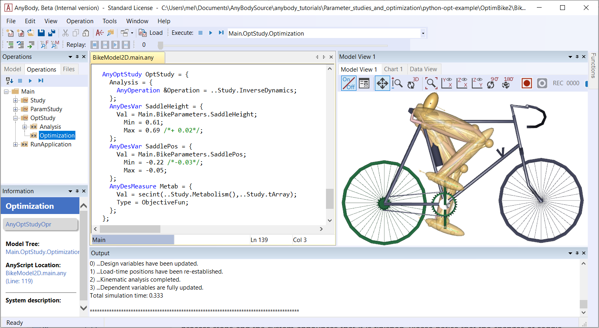If the model loads you should get a screen picture similar to the one above this text.
Running the optimization study#
Select the Main.OptStudy.Optimization in the operation dropdown and
then the Run button. The model starts cycling and after a few rounds you will
notice the saddle position changing, but not in a systematic grid like in the
parameters study. What you will see is gradual changes back and forth in
different directions until the changes wear off and the position converges.
Every time you see the left-most number changing in the Output window it is an indication that the optimizer has picked a new optimization direction to try. You should see the number increasing in slow steps up to 4 before the process stops and the system announces that it is finished. Please notice that the changes of saddle position in the last several steps is very minute, which is typical for optimization: the first steps bring large changes and large improvements, while the last many steps only improve slightly.
Now we are going to study the results in more detail using the Chart window. Do you still have the Chart window from the previous lesson with the Metabolism parameter study open? It should look like this:
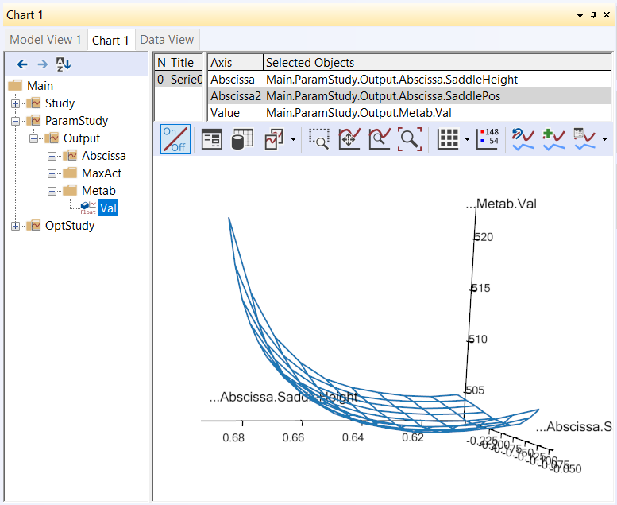If not, please run the ParamStudy again and plot the surface. When you
have this surface ready, please open another Chart window by clicking
View->``Charts``->``Chart2``. In the new window, please expand the tree
down to Main.OptStudy.Output.Metab. Then click the Val variable
under Metab. This produces a simple 2-D graph showing the development of
the metabolism over the 4 iterations:

The graph confirms that the vast majority of the improvement is obtained in a couple of iterations and the final iteration contributes only by a minor, almost insignificant adjustment. Such iterations with insignificant improvements occur due to the convergence criterion, i.e., the criterion that stops the optimization process. The optimizer does not detect mathemtically that the objective function has an optimum value; it merely detects that the changes of the found solution are small from one iteration to the next. Therefore, the optimization process will always end with one (or more) steps with insignificant changes.
The optimal solution in the Model View looks like this:
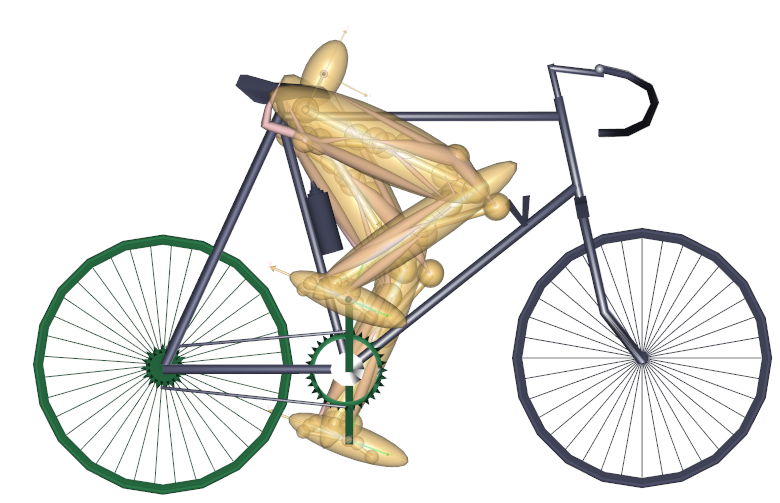Just above the Metab variable in the tree you can find the two
independent variables, SaddleHeight and SaddlePos, and they can be
graphed the same way revealing that their convergence is less monotone
over the iterations. This is also quite usual for optimization
processes.
An interesting way to investigate the convergence is to plot it in the variable/objective space rather than over the iterations. This is what we need the window with the parameter study surface for. At the top of this window you will find panels listing series and data to be plotted. Please right-click in the series window and select “New”:
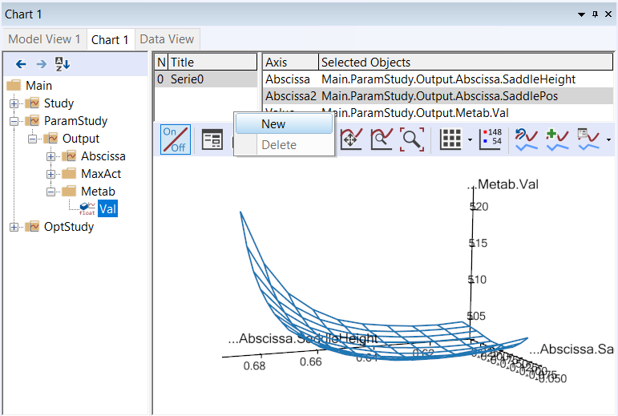This will give you a blank “Series 1”. When you highlight it by clicking
with the mouse you will see the list of Selected Objects in the
right-hand pane is empty. We are going to fill in the SaddleHeight and
SaddlePos variables from the OptStudy as Abscissa and Abscissa2,
respectively. This is done by selecting Abscissa and Abscissa2 in turn
and then expanding the OptStudy branch until the SaddleHeight.Val and
SaddlePos.Val, respectively, can be selected:

Finally, in the Value field select OptStudy.Metab.Val and look carefully
at the plot. You will see that an additional polyline has been added. It
originates approximately at the middle of the surface and shows the path
the optimization process has taken through the design space to the
minimum point. You can change the color of the line by clicking the second
leftmost button ( ) in the toolbar directly over the graphics
pane. This gives you access to all the settings and lets you control the
appearance of graphs in detail. In the picture below we have selected
) in the toolbar directly over the graphics
pane. This gives you access to all the settings and lets you control the
appearance of graphs in detail. In the picture below we have selected
RGB = {1,0,0}, i.e. red, for Series1 and Thickness = 4:

Caveat when running Optimization studies#
This plot illustrates the convergence history in the “landscape” of the objective function. Here we can see the reasons for the convergence being as it is. Actually, the optimum value lies in a relatively flat region and therefore the exact mathematical location of the optimum may be of a more academic importance than practical relevance since we can find many design point with almost the same objective function value.
“A flat optimum”, like this, can occasionally cause problems for the optimization process to provide exact convergence because it is difficult to distinguish between insignificant changes due to flatness or convergence. Furthermore, one more obstacle for finding the exact optimum is present in the given case. The objective function is not as smooth as the parameter study with the relative crude grid indicates. Below you see the result of a parameter study, we have prepared for a small 2 by 2 mm design area in the vicinity of the end-point of the fist optimization step.
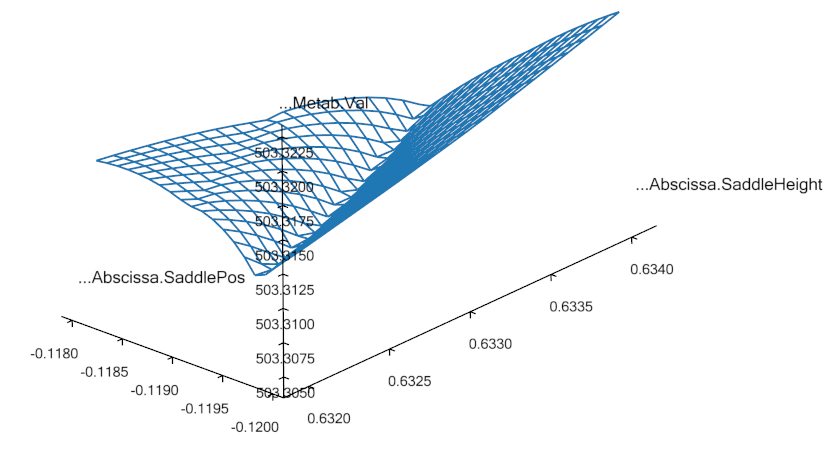This reveals a distinct (local) valley of the objective function. Minor changes of the input to the optimization process, whether it be the starting point or design variable bounds, can actually make the optimization process dive into this local valley and get stuck in there.
An optimization process that gets stuck in this local minimum could have a convergence history like in the plots shown below
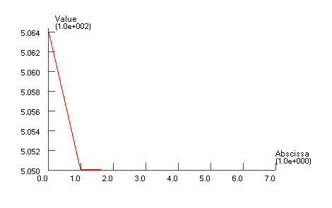
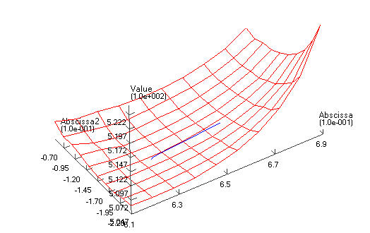
Notice how how only the first iteration out of 7 provides significant improvement of the objective function. This step brings the design value down into to the valley. The remaining iterations zigzags in the bottom of the valley without being able to get up and out and without providing any visible improvement. Finally, the convergence criterion is fulfilled. It can be mentioned that the convergence criterion requires both objective and design changes to be small.
Constrained optimization#
In the beginning of this lesson, we mentioned that the optimization problem formulation also handles constraints. They can be used for all sorts of purposes. For instance we notice that the optimal solution is a rather low saddle position, cf. the picture above. Suppose that for some reason, this position is too low. We, therefore, want to ensure that the distance between the crank and the seat is not too small, for instance larger than 0.66 m. This can be formulated very nicely as a constraint like this:
AnyDesMeasure Metab = {
Val = secint(..Study.Metabolism(),..Study.tArray);
Type = ObjectiveFun;
};
AnyDesMeasure SeatDist = {
Val = (.SaddleHeight.Val^2+.SaddlePos.Val^2)^0.5 - 0.66;
Type = GreaterThanZero;
};
Notice that constraints are defined as AnyDesMeasures of type
LessThanZero or GreaterThanZero. In the mathematical formulation of the
optimization problem stated in the beginning of this lesson, we have
only less-than-or-equal-to constraints, but there is only a minus sign
in difference of making a greater-than-or-equal-to into a
less-than-or-equal-to constraint. You can put this minus sign manually
or you can use Type = GreaterThanZero, which is equivalent. Notice that
equality constraints are in principle also a possibility, but currently
the optimization solvers in AnyBody do not handle this type of
constraints. Moreover, it is most often possible to handle equality
constraints by means of inequality constraints, because the objective
function’s gradient will put pressure on the constraint from one side;
thus, it is merely a matter of determining the proper type of inequality
constraint.
Notice also that the constraint is just an AnyDesMeasure, so anything
you could conceivably use as an objective function can also be a
constraint. In this case, the constraint is a simple mathematical
combination of variables, but in general it can also be properties such
as muscle forces, joint reactions, point locations, segment velocities,
and any other model property that the system can compute.
Enough talk; let’s try the optimization with the constraint added.
Please load the model again, select the Main.OptStudy.Optimization operation, and
click the run button. The optimization process will have the following
convergence picture:

If you alo re-run the parameter study, you can get this picture of the convergence:
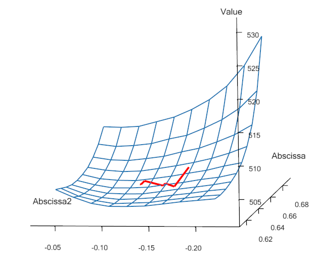We see that the result is indeed a compromise since the objective
function value cannot be reduced as much as in the unconstrained
case. The path of the design values bounces off the constraint and
finally it gets stuck on the constraint even though the objective
function still has a downwards inclination. The constraint lies like a
wall through the design space. We can see the convergence path along the
constraint by plot the constraint value, i.e., the SeatDist.Val. This
looks like:

where it is obvious how the optimizer hits the constraint, bounces off, hits again, etc. and finally it converges. At no point in time, the constraint value becomes negative, which was exactly what we prescribed in its definition.
A final look at the result could be the picture of the model after this constained optimization, which shows a visible difference compared to the unconstrained solution: The hip position is now higher, i.e., longer from the crank and to achieve this it is further forward, see the picture below:
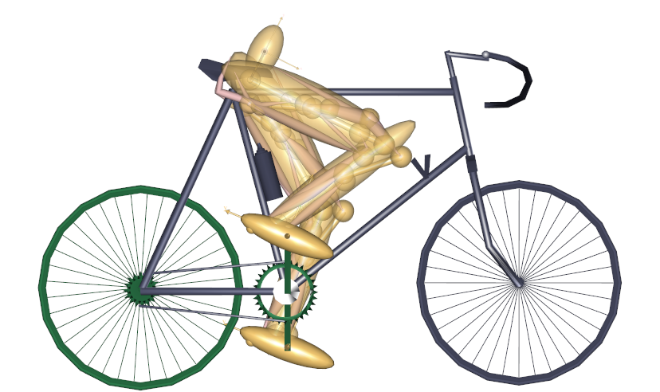This completes the introduction to optimization studies.
In lesson 3 we will look at how to use external (3rd. party) optimizers with AnyBody. In particular we will show how to use the Python programming language to run the same optimizations as we have done in this Tutorial.